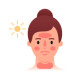

Sunburn
Rx
1.Oint Zinc Oxide N=1 q12h
2.Cool & Wet Compresses PRN
نکته: معمولا سوختگی درجه یک است.
نکته: درموارد شدید که دچار ادم وتاول و پوسته پوسته شدن میشه جهت درمان ازکمپرس سرد استفاده بشه
نکته: جهت درد بیمار از مسکن خوراکی یا بیحس کننده موضعی استفاده کنید.
1️⃣ درماتیت تماسی
2️⃣ درماتیت آتوپیک
3️⃣ سوختگی شیمیایی
4️⃣ سلولیت
5️⃣ پورفیری حاد متناوب
Drug-Induced Photosensitivity 6️⃣
Heat Stroke 7️⃣
Xeroderma Pigmentosum 8️⃣
9️⃣لوپوس